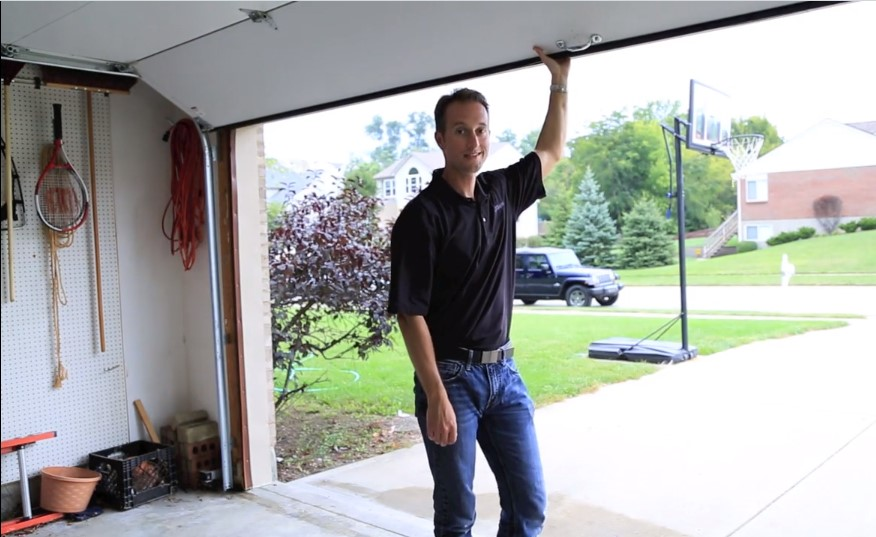

Our history
Big Things start Small
.jpg)
Founded in 1963, FM513 has always been fond for developing passion and curiosity in top notch vehicles.
Our co-founder Jeremy Jayton has started this club all from a garage and now it is expanding across Canada since years.

We started small to become big:
-
Opened the club and beginned doing autobody work in 1963
-
Repaired the Ford Mustang 1968 and gained popularity
-
Opened a new workshop and successfully reached the top ranked mechanics of autosportive vehicles in 1986
-
Opened a new track in 1994 for automobile racing
-
Created the online club in 2000 to motivate our sportive automobile amateurs
As of now I, Anonimous Student-CEO of FM513, hosted various track races since 1994.
Want to see who won so far? See the table below:
| Location | Date | Winner |
|---|---|---|
| Vancouver, BC | Jan 12, 1994 | Yozemi Okunoi |
| Burnaby, BC | Feb 6th, 1999 | Victor Chase |
| Calgary, AB | September 8th, 2002 | Jenskin Toshiki |
| Winnipeg, MB | May 12th, 2011 | Yugosou Monit |